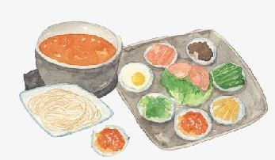

《想见你》穿越的玄妙之处在于，观众无法厘清一个有头有尾的时间线，追溯到底是黄雨萱先爱上李子维，还是李子维先爱上黄雨萱，到底是黄雨萱先穿越，还是李子维先穿越，他们互为起点和终点，互为因果。在观众的一般认知中，时间是线性的，过去、现在、未来是有着清晰的先后顺序；但在莫比乌斯概念里，时间是绵延的，相互渗透的，过去、未来相互交织，互为循环。该剧在保留台湾偶像剧的核心特色外，也拓展了台湾偶像剧的想象边界。同时，在偶像言情之余，它也融合了悬疑元素与社会议题，既丰富剧集可看性，也让剧集具有强烈的现实属性。
鸡蛋即母鸡产的卵。鸡蛋主要可分为三部分：蛋壳、蛋白及蛋黄。鸡蛋含有大量的维生素和矿物质及有高生物价值的蛋白质。具有滋阴润燥，养心安神，养血安胎，延年益寿之功。鲜鸡蛋所含营养丰富而全面，营养学家称之为“完全蛋白质模式”，被人们誉为“理想的营养库”。鸡蛋的蛋白质品质最佳，仅次于母乳。一个鸡蛋所含的热量，相当于半个苹果或半杯牛奶的热量。鸡蛋的做法更是多种多样，如酱烧鸡蛋，豆角炒鸡蛋，菠萝鸡蛋糕，菠菜炒鸡蛋，双椒豆豉炒蛋，丝瓜炒蛋，韭菜炒鸡蛋等。
旅游可以缓解工作和生活方面的压力，使精神得到彻底放松 ，旅游是在没有任何心理负担的情况下进行的 ，所以可以让自己的心灵得到彻底的放松。旅游往往要跋山涉水的 ，过程虽很累 ，但它带给人的更多是精神上的和肉体上的愉悦 ，比如赏风景 ，尝美食 ，住宾馆 ，听故事等等 ，哪一样都会让我们愉悦吧， 一次旅游， 回味无穷。 旅游可以开阔眼界 ，增长见识和见闻， 通过旅游 ，人们可以亲眼观察到丰富的人文景观 ，还可以了解各地的文化风俗 ，饮食习惯和宗教信仰 ，通过旅游可以给人带来全新的感受。